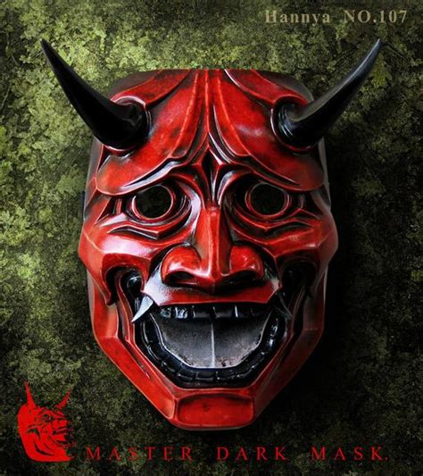

Commonly used as an accessory in dramatic Noh performances, Noh masks have an unsettling appearance of scorn and malicious desire. Top-end Noh masks have a variety of expressions which change depending on the lighting and direction of the viewer. Used as a means to hide motives, Noh masks are said to absorb negative energy and impure thoughts. Houses of wealth and high status are known to decorate entrance-ways or shrine rooms with Noh masks in order to prevent evil spirits. Either as a precaution to deter children from wearing the expensive accessory or to not dirty the design, there is a warning which states the Noh mask must not be worn unless on special occasions by a professional. Because the Noh mask has the duty of absorbing negative energy and thoughts, it is believed to take on an entity of its own - an evil spirit which grows hungry for human souls. If someone were to carelessly wear a Noh mask, the soul is sucked from the body; causing the flesh to rot until only a festering corpse remains. The age and power of the Noh mask is said to determine how quickly a wearer's soul is taken.
A resident of a north-east prefecture explained an experience from his youth about a festival and a Noh mask. Being 17 years old at the time, he didn't want to go to the festival out of laziness, but was urged to participate by the townsfolk. Upon arrival at the festival, there was a large fire circled by all of the people of the town.
A banging of drums rang out, and a person wearing a Noh mask appeared from the temple. The Noh mask person began to dance and chant, and the townsfolk copied. However, after several minutes, the dance turned into a frenzy of trembling limbs; almost like an uncontrollable seizure as people danced without thought. The young resident, despite his concerns of not wishing to attend the festival, joined the mass of dancing as if his limbs were being manipulated. After thirty minutes, the drumming and dancing abruptly stopped, to which the townsfolk separated. The festival spokesperson invited all of the townsfolk to a meeting after the dancing, however only a small percentage of the festival-goers joined. The young resident joined the meeting at the request of his friend, and they were both confused at why they had been caught up in dancing - unnerved as to how they couldn't recall joining or partaking in the series of movements. After inquiring about their concerns to a trusted uncle, the elder man replied, "You're right - the Noh mask happened. No matter where it is, this sort of thing happens. However, it's good you don't understand the situation. A word of warning: when there is this type of festival, participate without hesitation. I'll tell you why when you're older." Nothing more was ever said. To this day, the teller of the story believes it was a festival for the Noh mask to feed on the negative emotions of the townsfolk - morphing them into zombie-like creatures which it can easily manipulate until locked back into the temple for another year.